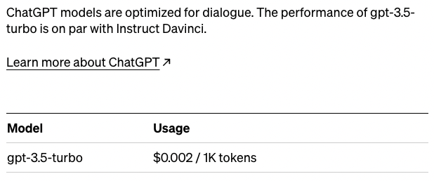
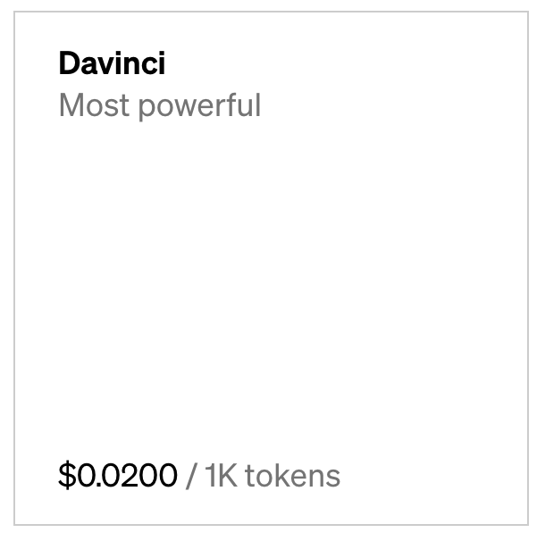

Leveraging
Large Language Models
Created by Tom MacDougall
How can LLMs be used
...in a corporate setting
External/Production usage
- Expose augmented interface* to client that makes calls to the OpenAI API and delivers a response
Internal/Development usage
- Use OpenAI API and chat interface to aid in development
*The interface can use prompt engineering to limit the response to deisred content and reduce cost.
In addition, custom code can transform the output and perform additional actions. Here is a Gartner article itemizes important questions about ChatGPT. Of note is number 7: What actions do you recommend we take?
What are GPTs?
- A family of models (GPT, GPT-2, 3, 3.5, 4 ...so far)
- Causal language models (not masked language models), predicts the next content based previous content, it then iterates making it auto-regressive
- ?
- ?
How is ChatGPT different?
GPT-3
Pricing
- Chat GPT

- DaVinci (10 times more)

How do we use LLMs
Examples
- Generate internal code and configurations to help deliver solutions in product
- Natural language to SQL
- Natural language to conductor blueprint
- Natural language to Wind River pipeline
Suggestion: results should include natural language with visuals